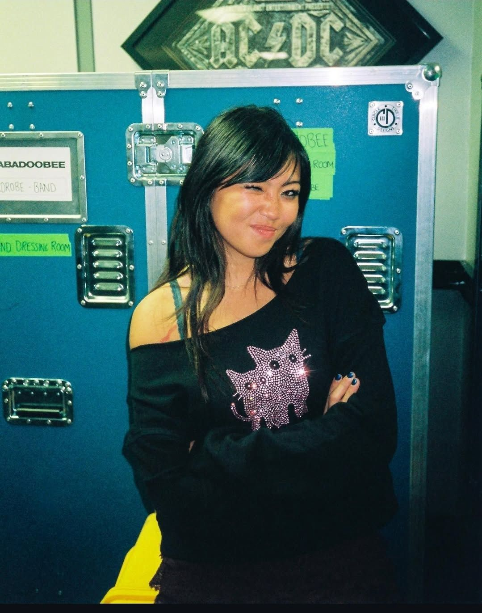
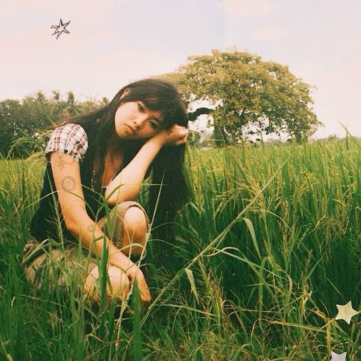
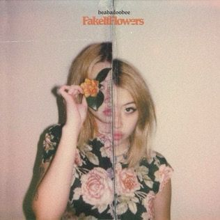

Sobre a Beabadoobee

Biografia
*Beatrice Kristi Laus, conhecida artisticamente como *Beabadoobee, nasceu em 3 de junho de 2000 em

Carreira
A carreira de Beabadoobee começou de forma espontânea em 2017, quando publicou a música "Coffee" no SoundCloud. Gravada com recursos simples, a canção viralizou

Primeiro Álbum — Fake It Flowers
Em 2020, Beabadoobee lançou seu primeiro álbum de estúdio, intitulado "Fake It Flowers".

Relação com a Música
Para Beabadoobee, a música sempre foi mais do que uma carreira: é sua principal forma de expressão e de conexão com o mundo.
Entre em contato
© Copyright 2025. Produzido por Giovanna Escabio Beltrão